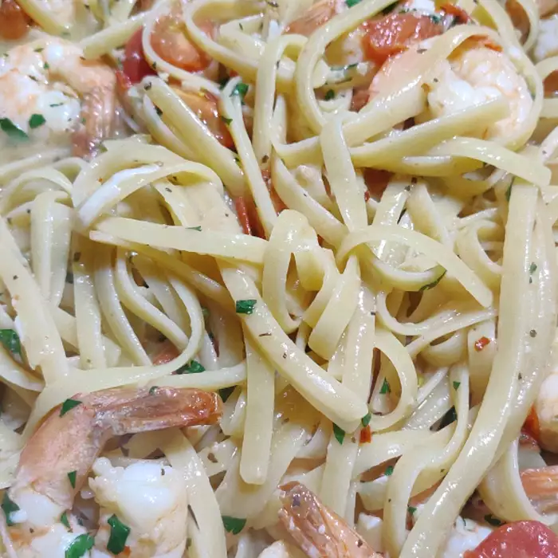

Shrimp Scampi with Linguini Recipe

Description
This recipe results in lots of garlicky shrimp with some white wine and lemon juice.
Ingredients
- 1 (16 ounce) package linguine
- 1/4 cup olive oil
- 1/4 cup butter
- 6 cloves garlic, minced
- 1 pound peel and deveined medium shrimp
- 3/4 cup white wine
- 1/2 cup lemon juice
- 1/4 teaspoon crushed red pepper
- 1 tablespoon chopped fresh basil
- 1/2 teaspoon salt
- 1/2 pint grape tomatoes, halved
- 2 tablespoons grated Pecorino Romano cheese
- 1 tablespoon chopped fresh parsely
Directions
- Step 1: Fill a large pot with lightly salted water and bring to a rolling boil over high heat. Once the water is boiling, stri in the linguine, and return to a boil. Cook the pasta uncovered, stirring occasionally, until the pasta has cooked through, but still firm to the bite, about 11 minutes. Drian well in a colander set in the the sink. Transfer the linguine to a large mixing bowl.
- Step 2: Heat the olive oil and butter together in a large skillet over medium heat until the butter is melted. Cook and stir the garlic in the butter and oil for 2 to 3 minutes. Add shrimp and cook for 4 to 5 minutes, stirring frequently. Stir in the wine, lemon juice, red pepper, basil, and salt and cook another 1 minute. Mix in the tomatoes and cook 1 minute more; remove from heat and transfer mixture to the bowl with the linguine. Sprinkle the Pecorino Romano cheese and parsely over the pasta and sauce; toss until well mixed.